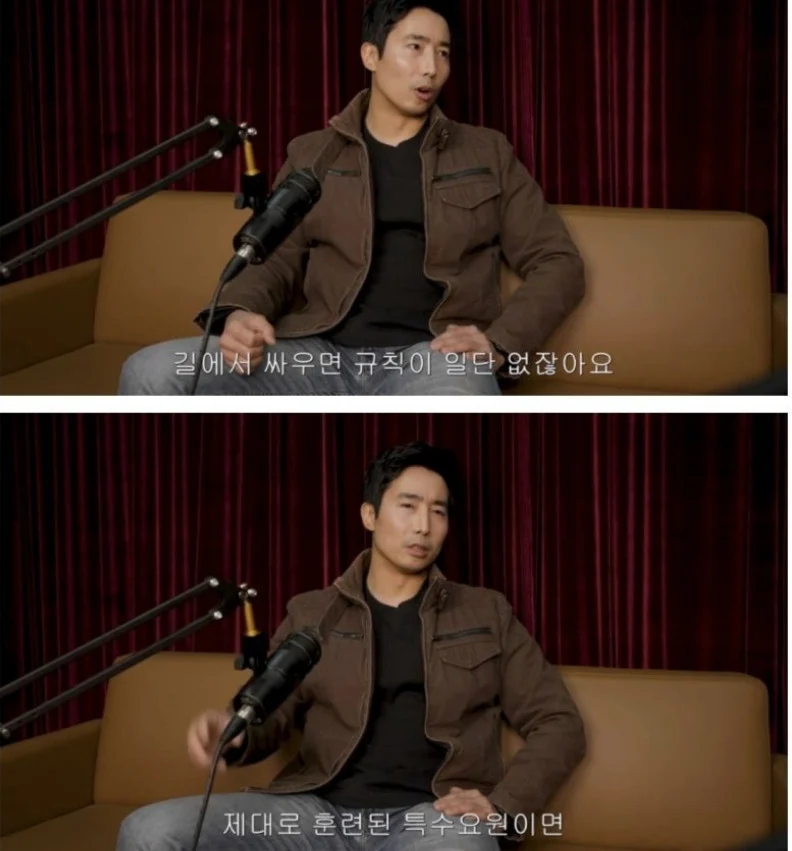
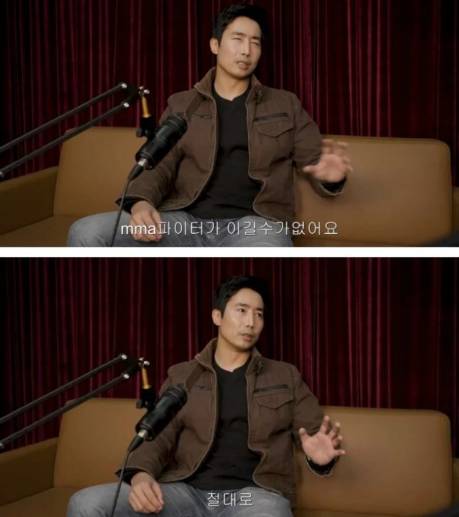
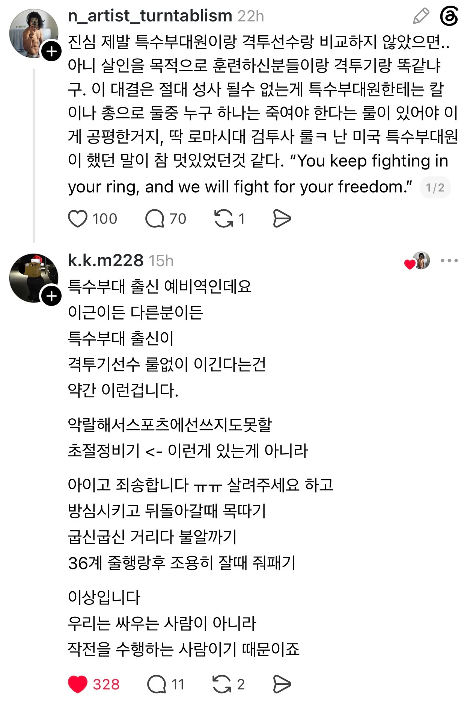

특수부대원들이 격투기 선수도 혀를 내두르는
초악랄한 살상용 무공을 가진건 아님ㅋㅋ



특수부대원들이 격투기 선수도 혀를 내두르는
초악랄한 살상용 무공을 가진건 아님ㅋㅋ
특수부대원이
아이고 잘못했습니다. 굽신 굽신 하다가
상대가 방심하면 불알 까고 눈찌름?
철저하게 명령받은 대로 싸우며
그 와중에도 민간인 피해 최소화하고
적에 대한 공격도 정해진 범위내에서 하는게
특수부대원이지.
무슨 사이코패스 살인마임?
사이코패스 살인마 장윤기가
여고생을 난자한 후 이 소리를 듣고 달려온
남자 고등학생에게
"경찰에 신고 좀 해주세요"
라고 부탁한 뒤 전화 중인 남고생을 찔렀잖아
말씀하시는거 보면 특수부대원에 대해서 엄청나게 잘 아시나보네요
특수부대원이 민간인 피해보다 작전을 더 우선으로 생각한다면 싸이코패스 살인마라니 저는 그 생각에 동의하지 않아요 오늘 하루도 저는 국정원이나 군인, 경찰분들의 피와 땀으로 새겨진 자유를 만끽하며 하루를 보낼 생각이에요
화이팅 하시구요 좋은 하루 되세요
길거리든 링이든 1:1로 눈 마주치고 시~작 하면 MMA가 무조건 이기겠지. 그것도 맨손으로 하면.
근데 그냥 하루 주고 서로 마주치면 알아서 싸워라 룰이면 이야기가 다를듯. 무기도 각자 알아서 챙기고 ㅋㅋ
룰 없이라면서 경기장이라는 룰은 왜 자꾸 넣는거야
만약에 진짜로 성사된다면 어떤 룰이여야 할까
적당히 범위는 도시정도로 하고 그 안에 물건은 모두 사용 가능 정도로 해야하나
승패는 상대의 패배선언 혹은 선언불가시 승리
룰없이 일단 살인이나 승리가 목적이면 당장 그자리를 피했다가 뒷통수 후리면 끝나는데 뭔...
대부분 특수부대가짐
특수부대가 mma선수보고 정면싸움하겠냐.. 도망가거나 드라이버같은거 던지거나 그러겠지
그래도 맨몸이면 절대 못이김